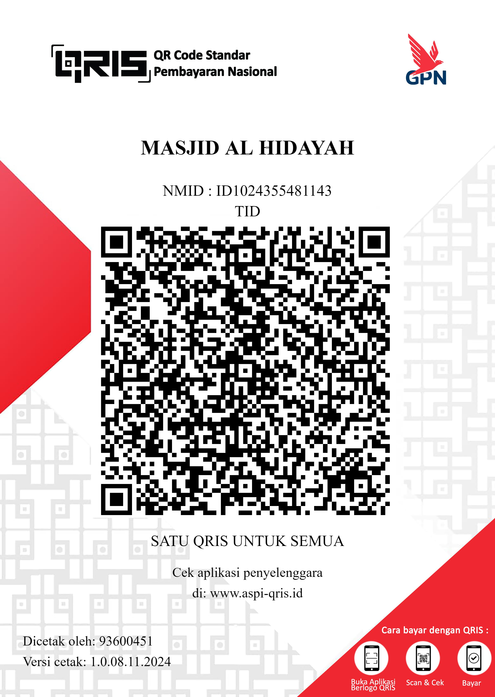
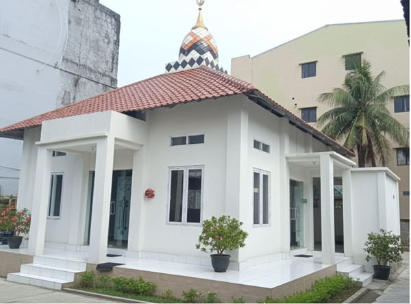
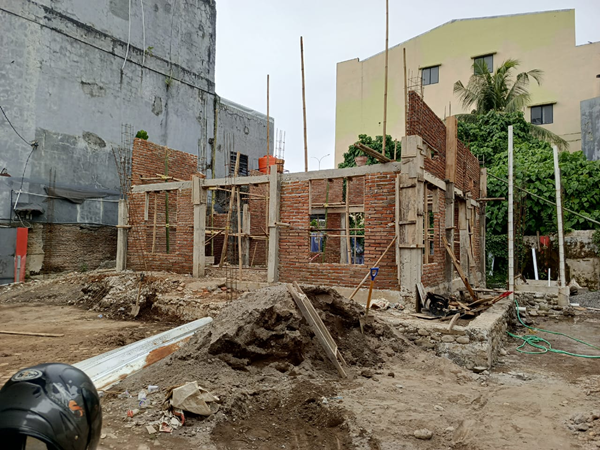
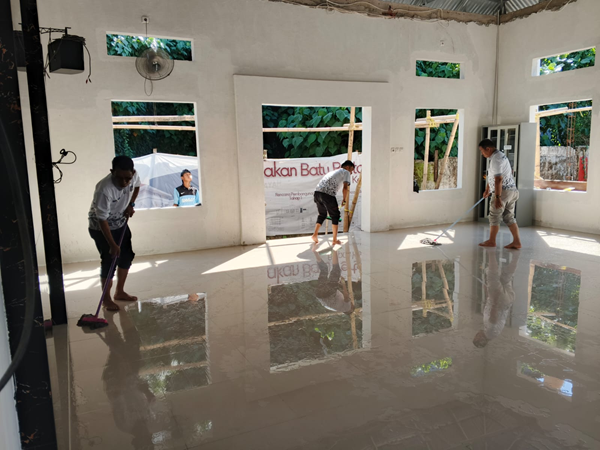
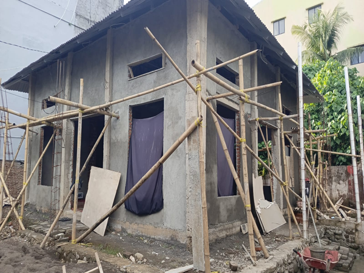
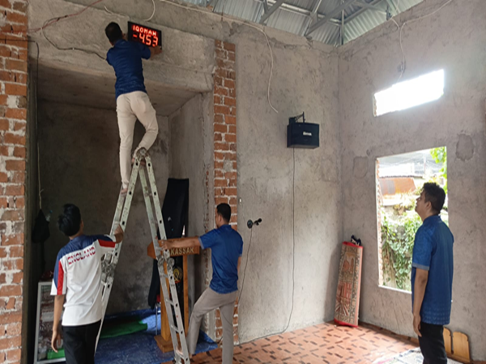
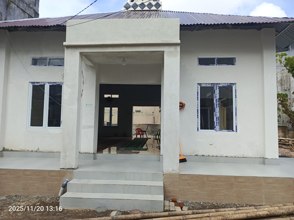
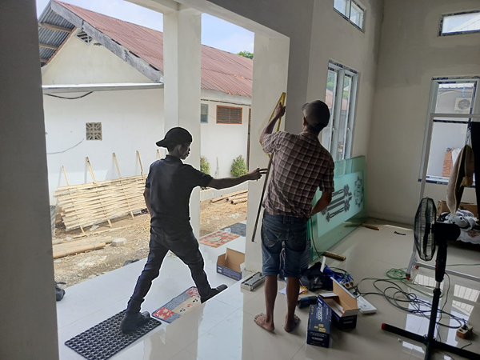
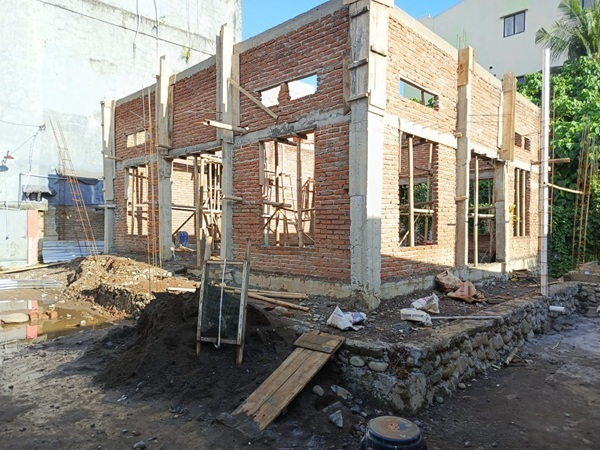

Masjid Al Hidayah
Salurkan infak terbaik anda
melalui rekening bank :
BSI 2002002569
An. Mesjid Al Hidayah
Konfirmasi : 081340371362

Pengenalan Masjid Al-Hidayah
Inisiasi Pembangunan Masjid diawali dengan adanya Mushola Al-Hidayah yang setiap harinya digunakan oleh pegawai.
Mushola Al-Hidayah pertama kali dibangun pada tahun 2016 yang setiap harinya digunakan untuk kegiatan Keagamaan seperti Sholat Dhuha di pagi harinya, Sholat berjamaah, tempat belajar dan membaca Al-Quran, serta kajian agama di tiap hari Jumatnya. Namun pada akhirnya, Mushola Al-Hidayah ini tidak dapat lagi menampung jumlah pegawai atau masyarakat yang beribadah atau kegiatan keagamaan lainnya. Untuk melaksanakan sholat berjamaah misalnya, harus dibagi menjadi dua waktu karena kapasitas mushola, serta tempat jamaah wanita hanya bisa digunakan untuk tujuh jamaah.
Untuk merealisasikan rencana ini, kami membutuhkan dukungan dan bantuan dari berbagai pihak, baik dari pemerintah, donatur, maupun masyarakat sekitar.
Progres Pembangunan Masjid Al-Hidayah

Masjid Telah di gunakan
View more{kind=link}

Pemasangan Batu Merah
View more{kind=link}

Pemasangan Lantai
View more{kind=link}

Proses Acian
View more{kind=link}

Pemasangan Jam Dinding Digital
View more{kind=link}

Pemasangan Plamor
View more{kind=link}

Pemasangan Pintu Masjid
View more{kind=link}

Pemasangan Batu Merah
View more{kind=link}